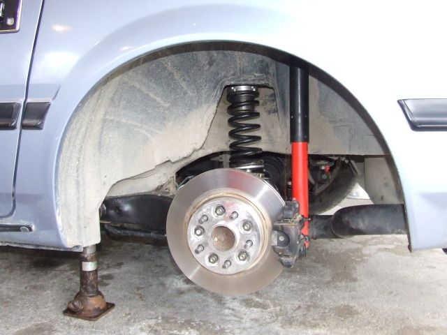
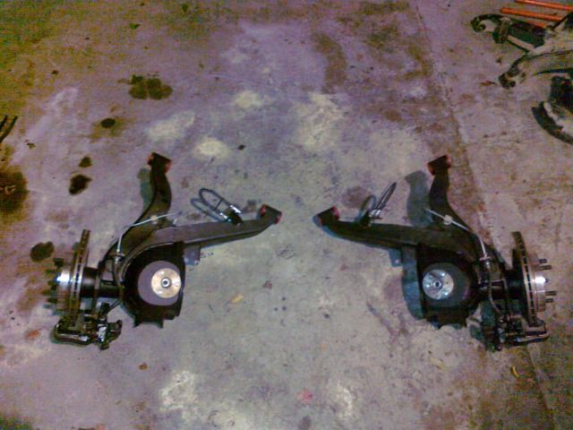
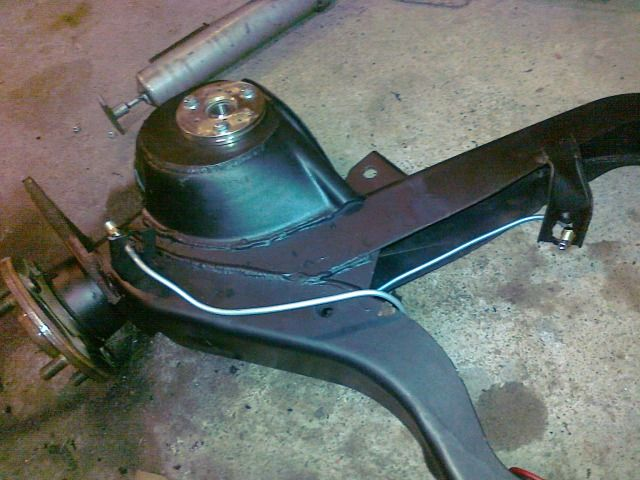
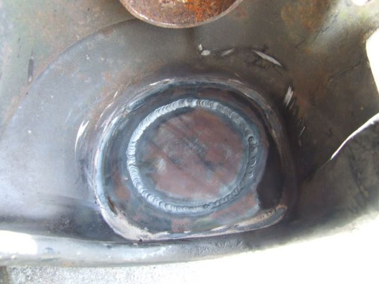
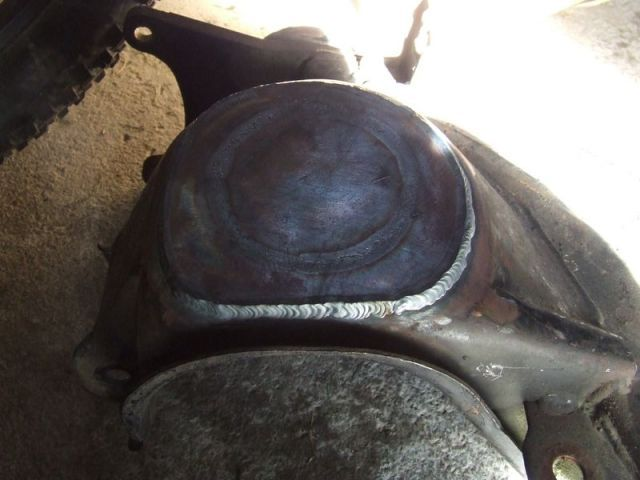
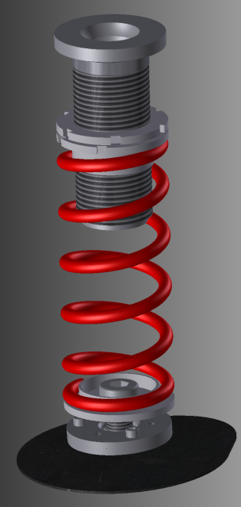
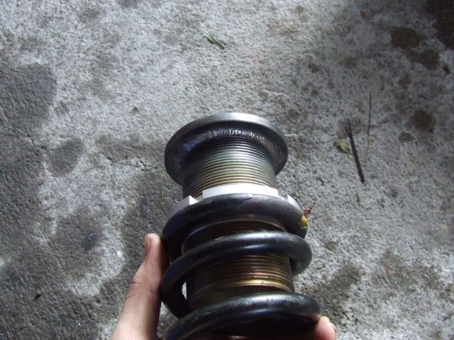
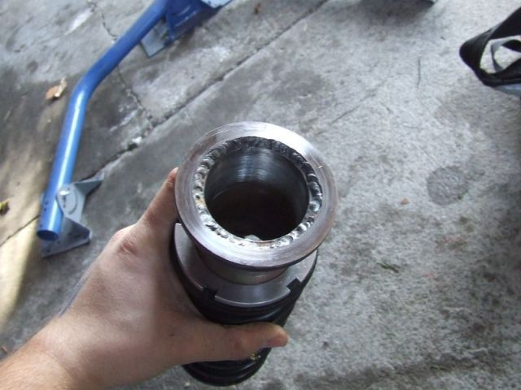
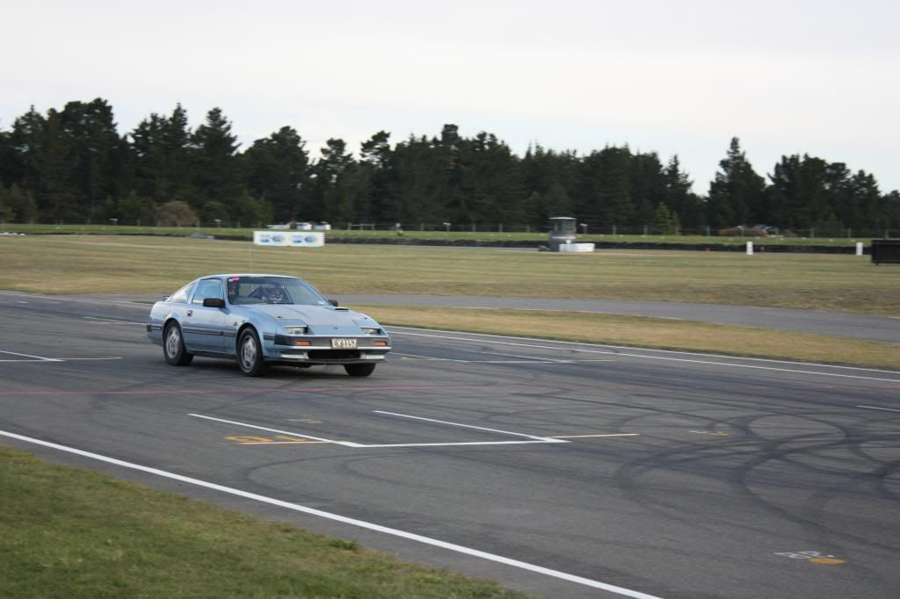

-
Hey guys,
I need to rework my car over the off season in a variety of ways. One of the big projects I want to tackle is the suspension. Right now I am running Powertrix 9k/7k. The big thing I need to do is to fix the rear suspension so it is SCCA legal. Right now the rear springs are relocated from the oem perch to the coilover body, which is illegal in both street touring and street prepared trim (not sure which class I want to run next year).
I recall seeing some older ground control + Koni setups where the coil spring perch was welded onto the body and the rear arm. Just looking to see if anyone has more information about this setup. -
I think James did something like this to remain legal in NZ. I think it's somewhere in his build thread.
1988 300zxt. gt35, stance, etc. Wheels: Varrstoen ES2 18x9.5 et-13 225/40. 18x10.5 et0 245/40
1990 jetta vr6'd -
can you run replacement springs in the stock location for the rear? if so, consider 79-93 Mustang springs. I am currently running aftermarket "Ford racing "C" Springs" I am using the fronts from the kit, cut down and under the rear of my car, with limit straps as well for safety. damn effective! 600+lb setup!Damn dirty angels....these cars!
Current Daily Driver - 86 Turbo.
Under the cover - THE BANANA… that needs to be re-energized.
sigpic -
I've thought about that too, but I would rather do some kind of standard size coil spring so I can perform height adjustment (corner balancing) as well as switch spring rates for different tires and track surfaces.
I'll check James' thread as a refresher. -
if you could put a threaded section under them, would work perfect! (bolt a threaded section base to the control arm) Im interested in following this progress!Damn dirty angels....these cars!
Current Daily Driver - 86 Turbo.
Under the cover - THE BANANA… that needs to be re-energized.
sigpic -
I run the same size coils and adjusters as you weld on the front from grounds control. They fit over the centering bump on the control arm and the body. If you use 89-93 foxbody shocks also you don't even need limiting straps if you don't adjust too low. This is my exact setup. -
Aaaactually you should talk to russ about this…
You can continue to use your coilover without the spring and collars, then just install the correct height spring over the hump -- I expect same rate should work, or go +10% -
cheers DZ yes indeeded I did.Originally posted by DeleriousZ View Post
I will edit this post with pictures soon.







85 Turbo Slick Top
__________________________________________________ _____ -
So Basically whats happening here is a modification of Another idea ive seen on Z31P which used a pivot for the top spring hat.
The Purpose of this Modification is to use 2.5" coilover springs And to keep the spring in vertical compression during the swing of the semi trailing arm.
The Tit on the RCA is removed and trimmed up with a 3mm plate cut to shape and tig welded Inside & outside to provide a solid base to work with. From here I used Coilover top hats from something like Maxima or Cefiro or S13 rear suspension to give me the stainless steel base with the spherical bearing so i Could drop it down into the plate on the STA.
From here you cut a hole to locate the bearing block into the STA so its concentric and captive. The screws are there to hold it in and basically stop it clonking around.
The last piece required is a coil over spring top hat to be mounted through the spherical bearing in the block, this gives the movement you need to keep the spring in a straight line during compression.
The Threaded adjusters are not alloy they are something like 3 or 4mm steel, and they have a 10mm thick shoulder welded onto the top to provide a base for it to seat onto the chassis.
I have run this for 2 years with 8k springs which is something like the equivalent of 6.5 K if the spring was mounted the same as a full coil over shock.
I must note I used RUSS84 NA's calucations on moments and spring rates to work out the ride frequency. My car is very stable on a VERY rough road and the setup has proven itself on the street and a couple track days.
85 Turbo Slick Top
__________________________________________________ _____ -
I have nothing to add, other than my general excitement to see some actual threads on suspension performance 86na - BlueZ
86na - BlueZ
Shiro #366 - Kouki Monster
85t - Mr Tickles -
1988 300zxt. gt35, stance, etc. Wheels: Varrstoen ES2 18x9.5 et-13 225/40. 18x10.5 et0 245/40
1990 jetta vr6'd -
You know me Adam, just doing shit with no special tools. Just a hacksaw and a file, Its worth pointing out that lot was done over 2 years ago.Originally posted by adamvann3 View Post85 Turbo Slick Top
__________________________________________________ _____ -
I really don't care if happened a decade ago. Just like seeing conversation being generated.Originally posted by james View Post
A lot of my multilink suspension is out of my 85t getting some upgraded parts (HLSD, upgraded axles, driveshaft, 30a, ect…) but primarily due to identifying what the hell is causing the vibrations. Once I find the issue or set of issues and satisfied with the outcome I will post up. I like have answers where possible prior to posting issues.
But I digress86na - BlueZ
Shiro #366 - Kouki Monster
85t - Mr Tickles

Copyright © 2006–. All rights reserved. Privacy Policy